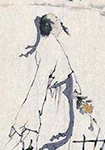

陈草庵
陈草庵（1245——约1330），名英，字彦卿，号草庵，大都（今北京市）人，生平事迹 不详，元代散曲作家。曾任监察御史，中丞等职。现存小令二十六首。元·钟嗣成《录 鬼簿》称其“陈草庵中丞”，名列前辈名公之中。孙楷第《元曲家考略》以为陈草庵名英， 曾任宣抚，延初拜河南省左丞。门岿继考其人，名英，字彦卿，号草庵，析津（今北京） 人。元代张养浩《云庄类稿》卷九《析津陈氏先茔墓碑铭》引陈英自述，叙其家世及任职 历程甚详（见《元曲百家纵论》第七三页），可备一说。其存曲多愤世嫉俗之作。